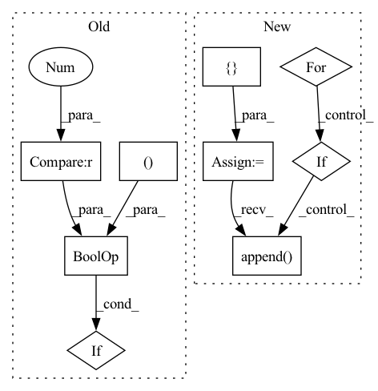

Pattern ID :17924
Before Change
def shampoo(ctx: Context, grad: jnp.ndarray, step: jnp.ndarray) -> jnp.ndarray:
last_size = grad.shape[-1]
kernel_sizes = (ctx.dims.pointwise_kernel, ctx.dims.outer_bottleneck_kernel, ctx.dims.inner_bottleneck_kernel )
if grad.ndim != 3 or last_size not in kernel_sizes :
return _shampoo(ctx, grad, step)
return jnp.stack([_shampoo(ctx, grad[:, :, i], step) for i in range(last_size)], axis=-1)
After Change
ctx = ctx.add_to_prefix("shampoo", count=False)
preconditioner = Preconditioner(grad, ctx.optimizer.block_size)
new_preconditioners = []
for i, old_stat in enumerate(preconditioner.statistics_from_grad(grad)):
new_stat = ema(ctx, old_stat, step, 1 - ctx.optimizer.shampoo_beta2, f"statistics_{i}", True,
jnp.eye(old_stat.shape[0], dtype=ctx.model.storage_dtype) * ctx.optimizer.epsilon)
prev_p = get_param(ctx, f"preconditioner_{i}", old_stat.shape, dtype=ctx.model.storage_dtype,
init_val=jnp.eye(old_stat.shape[0], dtype=ctx.model.storage_dtype))
if ctx.is_initializing:
continue
new_p, error = matrix_inverse_pth_root(new_stat, preconditioner.exponent_for_preconditioner(),
ridge_epsilon=ctx.optimizer.epsilon)
new_p = select_preconditioner(error, new_p, prev_p)
new_preconditioners.append( new_p)
assign(ctx, f"preconditioner_{i}", new_p)
if ctx.is_initializing:
return grad
return preconditioner.preconditioned_grad(grad, new_preconditioners)In pattern: SUPERPATTERN
Frequency: 3
Non-data size: 9
Instances Fragment ID: 58818193
Project Name: homebrewnlp/olmax
Commit Name: bf951740b4e76e5a2144d26015890e30aed83bb5
Time: 2022-07-06
Author: 39779310+ClashLuke@users.noreply.github.com
File Name: src/optimizer.py
M Class Name: AnonimousClass
N Class Name: AnonimousClass
M Method Name: shampoo(3)
N Method Name: shampoo(3)
M Parent Class:
N Parent Class:
M File Name: src/optimizer.py
N File Name: src/optimizer.py
M Start Line: 93
M End Line: 97
N Start Line: 70
N End Line: 89
Before Change
def __mod__(self, b:int):
if b == 1: return NumNode(0)
if isinstance(self, SumNode):
a = Variable.sum([(x if not isinstance(x, NumNode) else Variable.num(modn(x.b, b))) for x in self.nodes if not (isinstance(x, (MulNode, NumNode))) or (x.b%b != 0) ])
else:
a = self
if a.min >= 0 and a.max < b: return aAfter Change
def __mod__(self, b:int):
if b == 1: return NumNode(0)
if isinstance(self, SumNode):
new_nodes = []
for x in self.nodes:
if isinstance(x, NumNode): new_nodes.append(Variable.num(modn(x.b, b)))
elif new_nodes.append( x.a * modn(x.b, b))
else: new_nodes.append(x)
a = Variable.sum(new_nodes)
elif isinstance(self, MulNode):
a = self.a * modn(self.b, b) Fragment ID: 58818195
Project Name: geohot/tinygrad
Commit Name: f3386c7f09d87835d258dd27192d208b4ecbe678
Time: 2023-02-24
Author: george@comma.ai
File Name: tinygrad/shape/symbolic.py
M Class Name: Node
N Class Name: Node
M Method Name: __mod__(2)
N Method Name: __mod__(2)
M Parent Class:
N Parent Class:
M File Name: tinygrad/shape/symbolic.py
N File Name: tinygrad/shape/symbolic.py
M Start Line: 46
M End Line: 50
N Start Line: 46
N End Line: 57
Before Change
def shampoo(ctx: Context, grad: jnp.ndarray, step: jnp.ndarray) -> jnp.ndarray:
last_size = grad.shape[-1]
kernel_sizes = (ctx.dims.pointwise_kernel, ctx.dims.outer_bottleneck_kernel, ctx.dims.inner_bottleneck_kernel )
if grad.ndim != 3 or last_size not in kernel_sizes :
return _shampoo(ctx, grad, step)
return jnp.stack([_shampoo(ctx, grad[:, :, i], step) for i in range(last_size)], axis=-1)
After Change
ctx = ctx.add_to_prefix("shampoo", count=False)
preconditioner = Preconditioner(grad, ctx.optimizer.block_size)
new_preconditioners = []
for i, old_stat in enumerate(preconditioner.statistics_from_grad(grad)):
new_stat = ema(ctx, old_stat, step, 1 - ctx.optimizer.shampoo_beta2, f"statistics_{i}", True,
jnp.eye(old_stat.shape[0], dtype=ctx.model.storage_dtype) * ctx.optimizer.epsilon)
prev_p = get_param(ctx, f"preconditioner_{i}", old_stat.shape, dtype=ctx.model.storage_dtype,
init_val=jnp.eye(old_stat.shape[0], dtype=ctx.model.storage_dtype))
if ctx.is_initializing:
continue
new_p, error = matrix_inverse_pth_root(new_stat, preconditioner.exponent_for_preconditioner(),
ridge_epsilon=ctx.optimizer.epsilon)
new_p = select_preconditioner(error, new_p, prev_p)
new_preconditioners.append( new_p)
assign(ctx, f"preconditioner_{i}", new_p)
if ctx.is_initializing:
return grad
return preconditioner.preconditioned_grad(grad, new_preconditioners) Fragment ID: 58818197
Project Name: homebrewnlp/homebrewnlp-jax
Commit Name: bf951740b4e76e5a2144d26015890e30aed83bb5
Time: 2022-07-06
Author: 39779310+ClashLuke@users.noreply.github.com
File Name: src/optimizer.py
M Class Name: AnonimousClass
N Class Name: AnonimousClass
M Method Name: shampoo(3)
N Method Name: shampoo(3)
M Parent Class:
N Parent Class:
M File Name: src/optimizer.py
N File Name: src/optimizer.py
M Start Line: 93
M End Line: 97
N Start Line: 70
N End Line: 89